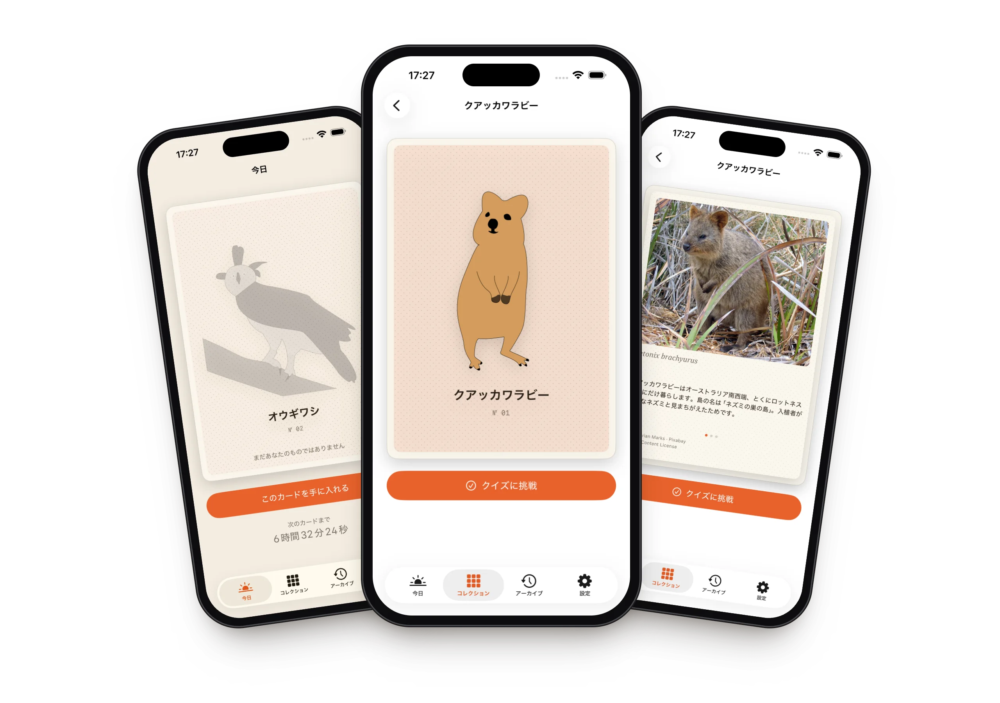
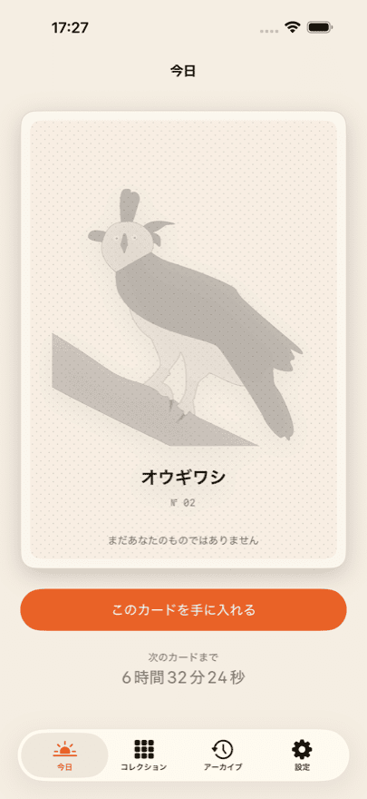
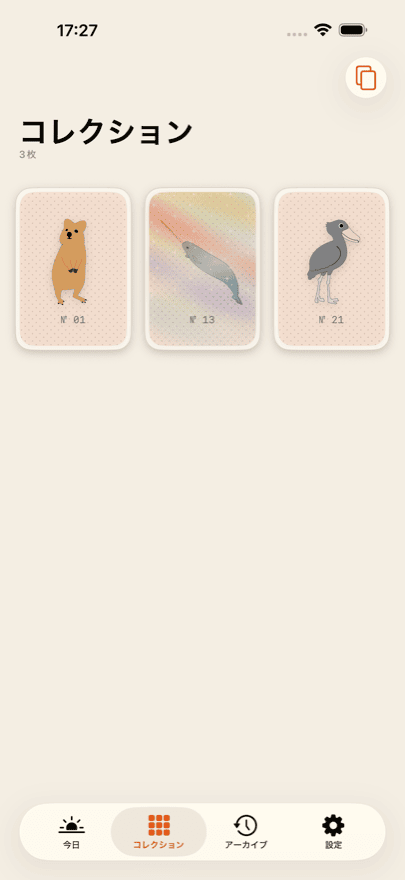
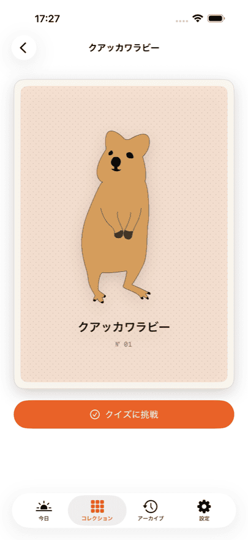
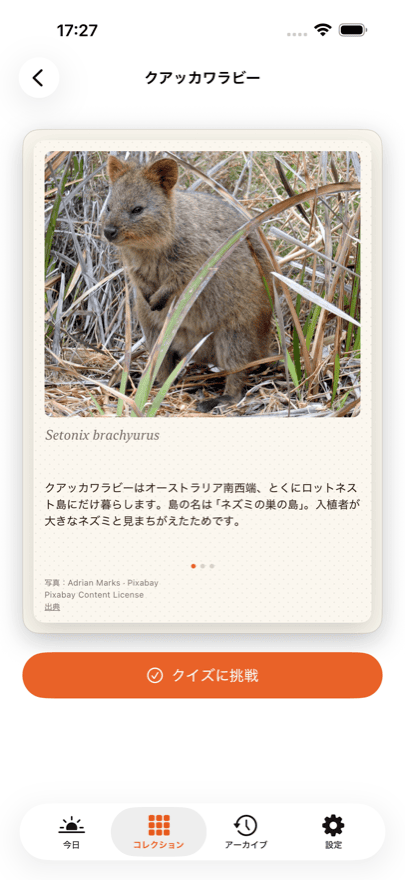
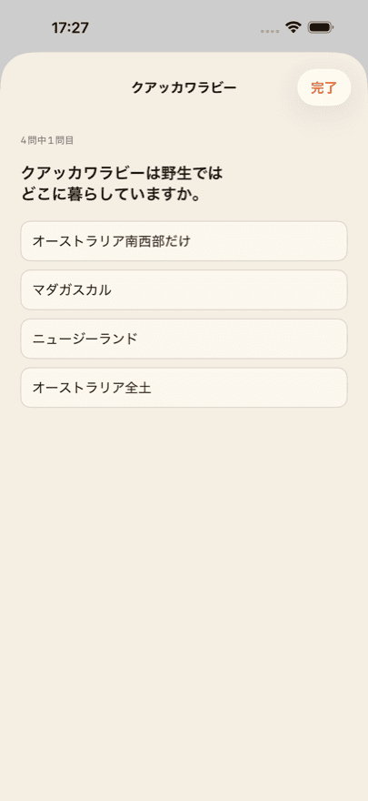

Daily Bestiary
集める、珍しい動物カード






できること
1日1枚
1枚だけ、それ以上は増えません。その日のカードは、カレンダーの日付ではなく、あなた自身が始めた日から決まります。いつ始めても大丈夫です。
写真と3つの豆知識
すべての裏面に、その動物の実際の写真、3つの豆知識、学名が載っています。
動物ごとのクイズ
動物1種につき4問。生物教師が内容を確認しています。何度でも挑戦できます。
育っていくコレクション
アルバムに並ぶのは、あなたのカードだけ。空きマスも「◯枚中◯枚」もなく、競争もありません。
ホロカード
光るカードがあります。端末を傾けると、光が表面を移動します。
Collector
Collector を使うと、アーカイブが開きます。逃した日のカードも後から手に入ります。その日のカードも毎日含まれ、コレクション全体のクイズ成績も見られます。
Collector はサブスクリプションで、解約するまで自動更新されます。解約はApple アカウントの設定からいつでも可能です。現在の価格と期間は国によって異なるため、App Storeでご確認ください。
アカウントなし、フィードなし、広告なし
登録もログインもありません。コレクションは端末の中にあり、iCloudにサインインしていれば、あなた自身の端末どうしで非公開のまま同期されます。開発者がそれを見ることはできません。
延々とスクロールすることも、周回することもありません。広告も広告ネットワークも、App をまたぐトラッキングもありません。購入処理には外部のサービスを利用しています。そこへ何が渡るかは、プライバシーポリシーに記載しています。
写真のクレジット
カード表面のイラストは手描きです。裏面の写真は、Pixabay、Unsplash、Wikimedia Commons といった自由に利用できる情報源から集めています。
すべての写真は、撮影者・ライセンス・出典へのリンクとともに、そのカードの裏面に記載しています。細かい注記の中ではなく、写真のあるその場所に。
よくある質問
Daily Bestiary の料金は？
ダウンロードは無料で、最初の3枚は無料です。裏面も豆知識もクイズも、そのまま楽しめます。そのあとは、その日のカードを1枚ずつ手に入れるか、10枚パックを購入するか、Collector を購読します。現在の価格はApp Storeに表示されます。国によって異なります。
アカウントは必要ですか？
いいえ。登録もログインもプロフィールもありません。名前もメールアドレスも尋ねません。
カードは全部で何枚ありますか？
どこにも書いていません。Appの中にも、このページにもです。総数を示すと、集めることが進捗バーになってしまいます。それは目指していません。存在するカードをすべて集めたときは、Appがそう教えてくれます。
1日逃したらどうなりますか？
そのカードが失われることはありません。Collector を使うとアーカイブが開き、逃した日を後から手に入れられます。Collector がない場合は、翌日また次のカードが届きます。
iPhoneとiPadでコレクションは同期しますか？
はい。両方の端末が同じApple アカウントでiCloudにサインインしていれば同期します。同期はあなた専用の非公開iCloudデータベースを通り、開発者はそれを見ることができません。
App を入れ直しました。購入は消えますか？
いいえ。Appの設定と、すべての購入画面に「購入を復元」があります。これでサブスクリプションと残りのクレジットがApple アカウントに再び結び付きます。コレクション自体はiCloudから戻ります。
Collector を解約するには？
App ではなくAppleから行います。設定 →（自分の名前）→ サブスクリプション。いつでも解約でき、現在の期間の終了時に有効になります。Appの設定にあるCustomer Centerからも同じ画面へ進めます。
インターネットに接続していなくても使えますか？
はい。カード、写真、クイズはすべてApp に含まれており、ダウンロードは発生しません。接続が必要なのは購入とiCloud同期のときだけです。